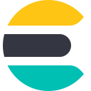

Qu'est-ce que je maîtrise ?
Compétences
Voici quelques-unes des technologies qui font partie de mes connaissances :
 HTML
HTML CSS
CSS JS
JS PHP
PHPSQL
 C#
C#
ElasticSearchKibana
 NodeJs
NodeJs Kotlin
Kotlin .Net Core
.Net Core Swagger
Swagger SQL Server
SQL Server MySQL
MySQL ASP.NET / WPF
ASP.NET / WPF TypeScript
TypeScript Express
Express React
React Next.js
Next.js Python
Python PostgreSQL
PostgreSQL MongoDB
MongoDBQu'est-ce que j'utilise ?
Outils
Voici les outils que j'utilise au quotidien :
 VS Code
VS Code VS 2022
VS 2022 Android Studio
Android Studio WAMPSSMS
WAMPSSMS GitHub
GitHub Bootstrap
BootstrapDocumentation
 Docker
Docker Git
Git Ubuntu Server
Ubuntu ServerComment je conçois ?
Architecture & Méthodes
Voici les architectures, pratiques DevOps et savoir-faire que je mets en œuvre :
Microservices
API REST
CI/CD
VMware
Active Directory
Design Patterns
Analyse Système
Recherche Opérationnelle
Green IT
Méthodes Agiles